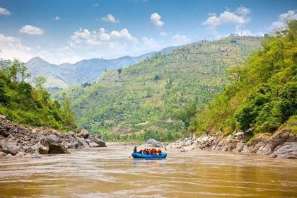

After World War II, surplus military rubber rafts began to be repurposed for river adventures—especially in Idaho’s Salmon River—marking the start of commercial white water rafting in U.S. The sport's popularity surged in the 1950s and 60s. In 1954 the American Whitewater Affiliation was created, helping formalize river classification standards from Class I to VI—a system still widely used today. Founded circa 1970s–1980s—following the wave of new outfitters emerging during rafting’s boom years. likely began with one or two rafts operating on a regional river—possibly Class III or IV rapids—guided by local enthusiasts. Much like the pattern seen at business histories of similar operations (e.g. Tributary Whitewater founded in 1978), the company evolved from humble beginnings to a more structured operation over time. •During the 1980s–1990s, expansion likely included: Diversifying “trip types” (half-day, full-day, multi-day), Adding river routes, Investing in better rafts and safety gear. • Going out of region or branching into related activities (kayaks, guided wilderness treks) was a common strategic move among rafting companies of the era. •By the 2000s–present, a company like White Water Rafting Co. may have: Earned accolades or media recognition, Developed programs to serve families, youth groups, and corporate outings, Added environmental stewardship programs or river cleanups (a widely adopted practice).
•Many similar outfitters became community fixtures and ecological advocates through the decades. • Whitewater Rafting, LLC in Glenwood Springs, Colorado, was founded in 1974 and celebrated its 50th anniversary in 2024. Founded by Ken Larson, ownership changed hands twice before its current operators, the Carters, purchased it in 2022. The company today runs dozens of rafts, employs dozens of staff, and has a well-earned reputation for safety and customer care. • Tributary Whitewater Tours started in 1978, grew through acquisitions, and even rebranded briefly as Raft California before returning to its original name in 2023